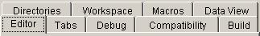
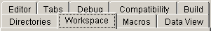
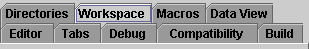
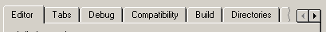

Previously with JTabbedPane, if all the tabs did
not fit within a single tab run, the JTabbedPane
wrapped tabs onto multiple runs. There have been many requests to
provide an alternative scheme, where the JTabbedPane
would instead display a single, scrollable run of tabs. This
document describes the new API for providing such scrollable tab
support in JTabbedPane for the 1.4 release. The
bugtraq report that corresponds to this change is: 4093898.
Wrapping tabs onto multiple lines provides the benefit of always allowing the user to view all possible tab selections at a given time:

However, the problem with multiple runs is in handling the case where the user selects a tab in a run which is not adjacent to the panel display area. For the Windows and Motif look and feel implementations, this action will cause the runs to rotate such that the run containing the selected tab is placed adjacent to the panel display area.

This behavior can be extremely disorienting to the user because it constantly re-arranges the tabs, eliminating predictability in the UI. The Metal look and feel solved this problem by always leaving the runs fixed, even if the selected tab is not adjacent to the panel display area:

Unfortunately the downside of the Metal solution is that it visually departs from the 'tabbed folder' metaphor (the selected tab is not 'attached' to its content). In fact, Chapter 7 of the Java Look and Feel Guidelines recommends against creating tabbed panes with multiple runs:
"If your tabbed pane requires multiple rows of tabs, consider dividing the content among several dialog boxes or components. Multiple rows of tabs can be confusing."
While constraining tabs in a tabbed pane to a number which will fit within a single run is an important UI guideline, there are circumstances where a proliferation of tabs cannot be avoided. This is often the case if the tabs are created dynamically by the application at runtime (perhaps driven off the content of a database).
An alternate solution for handling the tab proliferation case is to constrain the tabbed pane to a single, scrollable run of tabs:

Naturally, this solution has its own set of usability problems, the most obvious of which is that the user can no longer view all possible selections at one time. However, this scrollable-tab behavior is becoming increasingly common in user interfaces and therefore Swing now supports it as an option.
JTabbedPane
APITo allow programs to define which tab layout behavior they
require, we now provide a "tabLayoutPolicy" bound
property on JTabbedPane:
public void setTabLayoutPolicy(int layoutPolicy)
public boolean getTabLayoutPolicy()
Additionally, constants for the supported policy values have
been added to JTabbedPane:
public static final int WRAP_TAB_LAYOUT = 0;
public static final int SCROLL_TAB_LAYOUT = 1;
This feature had no impact on compatibility, as the default
value for the tabLayoutPolicy property is
WRAP_TAB_LAYOUT which matches the previous layout
behavior of the tabbed pane.